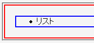
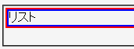

幅（widthプロパティ）が明示されたul, ol, dlの各要素に設定した上・左・右のマージンが無視される。下マージンは、リスト要素の終了タグの直後に親要素の終了タグがある場合に親要素の下マージンとして表示されてしまう。
<div style="border:2px solid red;"> <ul style="width:200px; margin:20px; border:2px solid blue;"> <li>リスト</li> </ul> </div>
ul要素の四方に20pxのマージンが置かれるので、親のdiv要素のボーダー（赤）とul要素のボーダー（青）の間に20pxの隙間が開くはずです。
Moz1.0.1での表示（標準モード）
WinIE6.0での表示（標準モード）
WinIE6.0互換モードでは横方向マージンは反映されますが、上マージンは表示されません。また、下マージンは親要素の下マージンになります。
WinIE6.0では標準・互換の両モードで不具合の発生が確認されました。